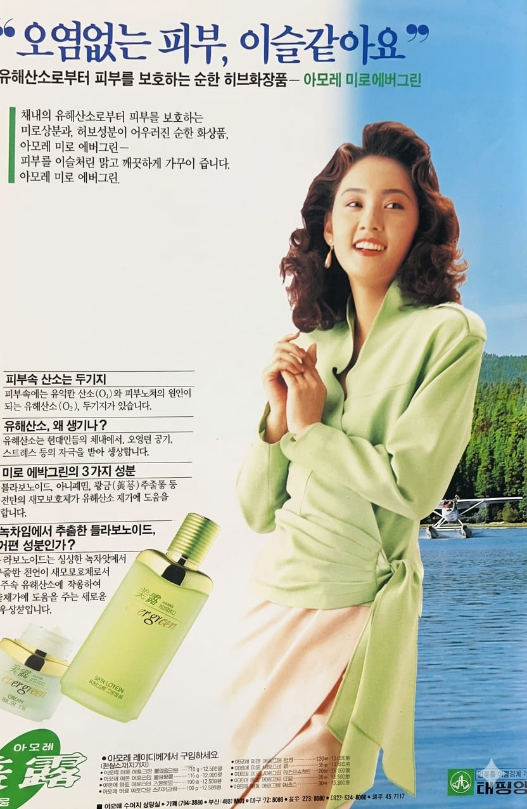
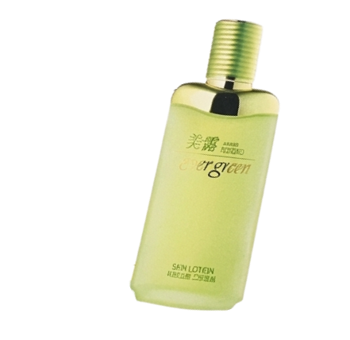

오현경
오염없는 피부, 이슬같아요.


오염없는 피부, 이슬같아요.
오현경은 1989년 미스코리아 진으로 선발된 뒤 1990년대 초반 광고계와 방송계에서 큰 인기를 얻은 모델이다. 깨끗하고 세련된 이미지로 주목받으며 화장품, 생활용품, 패션 광고의 대표 모델로 활약했다. 특히 맑고 건강한 피부 이미지가 강해 뷰티 브랜드 광고 모델로 많은 사랑을 받았다.
미로 에버그린은 자연스럽고 깨끗한 피부 표현을 강조한 화장품 브랜드로, 피부 본연의 맑고 건강한 아름다움을 전달하는 데 초점을 맞추었다. 당시 여성 소비자들에게 자연주의 화장품 이미지로 좋은 반응을 얻었다.
광고는 오현경의 깨끗하고 청순한 이미지를 활용하여 맑은 피부와 자연스러운 아름다움을 강조했다. "오염없는 피부, 이슬같아요"라는 문구를 통해 순수하고 투명한 피부 이미지를 전달했으며, 소비자들에게 신뢰감 있는 화장품 광고로 기억되었다.
1990년대 초반 화장품 광고는 자연스러운 아름다움과 깨끗한 피부 표현을 중심으로 제작되는 경우가 많았다. 기업들은 미스코리아 출신 모델이나 인기 연예인을 기용해 브랜드의 신뢰도와 고급 이미지를 높였으며, 오현경 역시 대표적인 광고 스타로 활약하며 당대 뷰티 트렌드를 이끌었다.